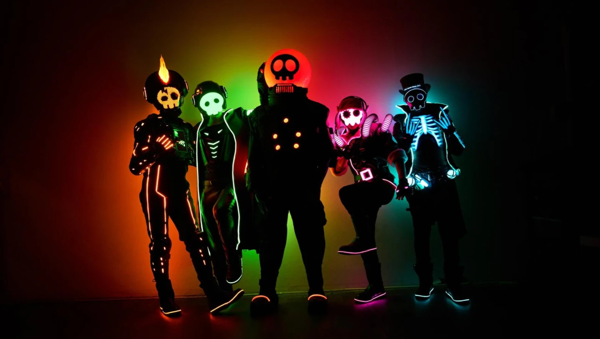
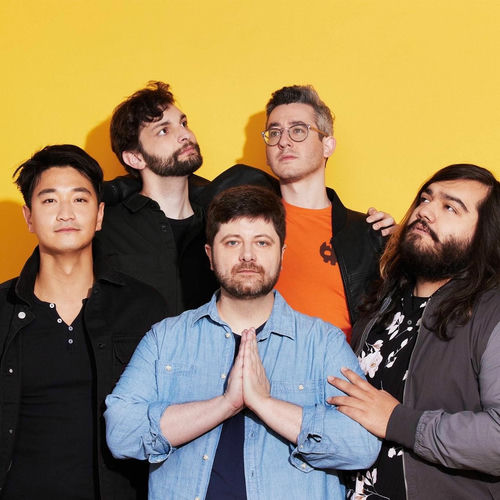
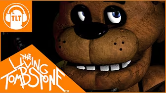
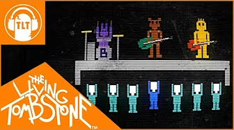
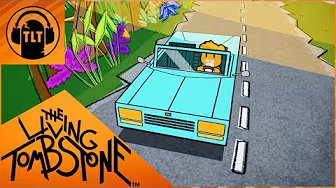

The Living Tombstone is an electronic rock music group founded by Israeli musician Yoav Landau in 2011. The group became famous on YouTube for creating songs inspired by video games, internet culture, and animated series. Their music combines electronic sounds, rock elements, and creative storytelling, making them popular among gamers and animation fans worldwide. Over the years, The Living Tombstone has produced many original songs and fan-inspired tracks that have gained millions of views online. Their unique style, catchy melodies, and meaningful lyrics have helped them build a large and dedicated fanbase. Today, they continue to release new music and remain one of the most recognizable independent music groups on the internet.


